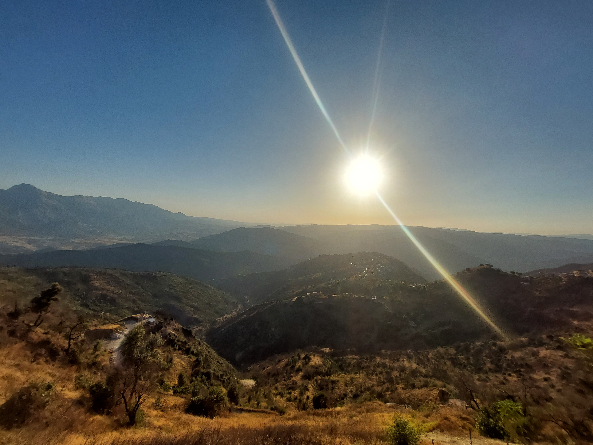

Le chemin vers l'aube
Je croyais qu'il fallait
redevenir celui que j'étais.
J'ai compris
qu'il fallait devenir
quelqu'un d'autre.
Quelqu'un qui connaît
ses blessures
sans leur donner son nom.
Quelqu'un qui sait
que tomber
n'est pas disparaître.
J'ai ramassé mes morceaux
sans chercher à les cacher.
Certains ne s'emboîtaient plus.
Alors j'ai changé la forme
de mon cœur.
J'ai appris la patience
des arbres.
La lenteur des matins.
Le courage
d'être imparfait.
Et un jour,
sans prévenir,
j'ai ri.
Un vrai rire.
Pas celui qu'on offre
pour rassurer les autres.
Un rire qui venait
de très loin.
J'ai compris alors
que guérir
ne signifie pas oublier la nuit.
C'est apprendre
à reconnaître
le chemin vers l'aube.
Djamel Metref
At Yenni le 20 Août 2026
← Tous les poèmes